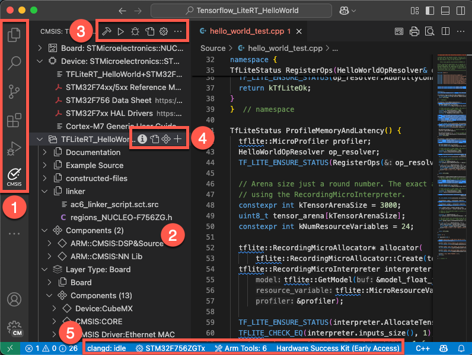
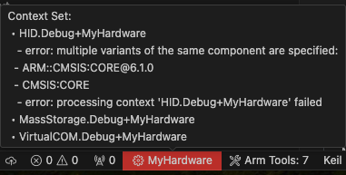

User Interface
The CMSIS Solution extension provides the Keil Studio GUI for project management and build tools with the CMSIS-Toolbox. Combined with other Arm and third-party extensions, it implements a powerful embedded development environment.
Overview

The GUI consists of these elements:
1. Dedicated views from the side bar
- Explorer view lists all local files of the CMSIS solution.
- Search view enables searching all files of the CMSIS solution
- Source Control view allows you to work with git.
- Extensions view lets you work with VS Code extensions.
- Run and Debug view switches the GUI to a dedicated debug view.
- CMSIS view is the main view for working with CMSIS solution-based projects.
Note
The ordering of the icons may be different in your VS Code environment.
2. Main area of the CMSIS view
The CMSIS view  shows the content of the active projects included in the
solution. Each project contains configuration settings, source code files, build settings, and other project-specific
information. The main area of the CMSIS view shows:
shows the content of the active projects included in the
solution. Each project contains configuration settings, source code files, build settings, and other project-specific
information. The main area of the CMSIS view shows:
- Board and device information and related documentation.
- Groups and files: Groups and user files that you add to the project and that you can edit
- constructed-files: Contains generated files such as the
RTE_Components.hheader file for each context - linker: Contains a linker script file and a <regions>.h file (or other user-defined header files)
- Components: Shows the software components selected for the project with their source files, user code templates, and APIs. Click the files to open them in the editor. Click the book icon of a component to open the related documentation. If you are using a generator to configure your device or board, then a Run Configuration Generator option is available to start a generator session.
- Layer Type (if available): The software layers in the project with their source files, preconfigured software components, and configuration files
3. Icons available through the CMSIS view
 Build solution calls the compiler toolchain and builds the CMSIS
solution.
Build solution calls the compiler toolchain and builds the CMSIS
solution. Load & Run application flashes the binary onto the target and
starts the application.
Load & Run application flashes the binary onto the target and
starts the application.- Load & Debug application flashes the binary onto the target and starts a debug session.
- Open csolution.yml file opens the CMSIS solution YML file for editing.
- Manage Solution Settings allows you to manage the CMSIS solution settings.
- shows further views and more actions.
4. Main area icons
Depending on the file and the context, various icons may appear:
- IntelliSense is active for this cproject file.
- Open the file.
- Manage the software components of the cproject file.
- Add groups or files to the cproject file.
5. Status bar
The VS Code status bar displays information about the status of your development environment and the project. The number of extensions installed might vary.
-
Status message of the clangd extension (used for IntelliSense).
-
You can inspect errors and warnings for a context set. For active projects in the context set, errors and warnings display when you move your cursor over the Context Set in the status bar. The indicator is red for errors and yellow in case of warnings. Click the indicator to open the Output tab for the CMSIS Solution category. If you previously closed the Manage Solution view, then this action also re-opens the view. 
-
The Arm Tools Environment Manager extension shows information about the tools installed. Move your mouse over Arm Tools to review the list. Click Arm Tools to get more options.
-
If you are using licensed Arm tools, the active license displays. Click the active license to manage it.
Available commands
You can access commands to manage your solution and the projects it includes in the following ways:
-
From the CMSIS view.
-
When you right-click the
*.csolution.ymlfile from the Explorer view. -
When you click the Context Set status bar item.
-
When you press Ctrl+Shift+P (Windows and Linux) or Cmd+Shift+P (macOS) to open the Command Palette.
| Command | Description |
|---|---|
| Create a Solution | Create a new csolution project. |
| Configure Solution | Set a compiler and add software layers |
| Manage Solution Settings | Configure the build context and debug setup. |
| Manage Software Components | Review, add, or remove software components |
| Run Configuration Generator | Open a configuration tools such as CubeMX |
| Build solution | Build the solution with the current context set |
| Rebuild solution | Rebuild the solution with the current context set |
| Debug | Debug the solution with the current context set |
| Run | Run the solution on your target |
| Focus on Solution View | Open the CMSIS view |
| Select Active Solution from workspace | If you have several solutions in your workspace, switch between solutions and select the active solution |
| Convert µVision project to CMSIS solution | Convert uvprojx files to csolution project format |
| Refresh (reload packs, update RTE) | Reload information from all installed packs and run cbuild setup update-rte |
| Clean all out and tmp directories | Clean all out and tmp directories for the active solution |